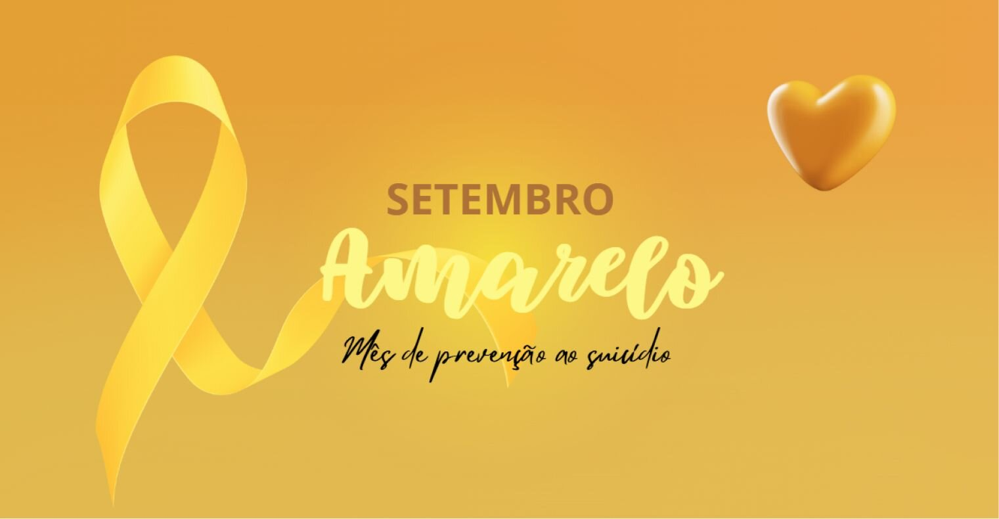
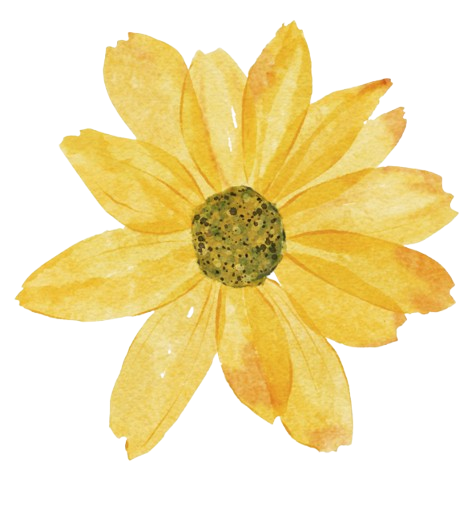

O que e o setembro amarelo❔

O Setembro Amarelo é uma campanha nacional de conscientização sobre a prevenção ao suicídio, realizada todos os anos durante o mês de setembro. Criada em 2015 no Brasil, a iniciativa é promovida pela Associação Brasileira de Psiquiatria (ABP) em parceria com o Conselho Federal de Medicina (CFM), e tem como objetivo quebrar tabus, reduzir o estigma e incentivar o diálogo sobre saúde mental.
Por que setembro❔
O dia 10 de setembro é reconhecido mundialmente como o Dia Internacional de Prevenção ao Suicídio.
Durante todo o mês, instituições, escolas, empresas e órgãos públicos se mobilizam para sensibilizar
a população e oferecer informações e apoio a quem precisa.
A importancia da
campanha
Problema de Saúde Pública
700 mil pessoas morrem por suicídio todos os anos.
1 morte a cada 46 minutos.
A maioria dos casos pode ser evitada com apoio psicológico, acompanhamento médico e uma rede de acolhimento.
Como ajudar❔
- Ouça sem julgamentos:
muitas vezes, a pessoa só precisa ser acolhida.
- Ofereça apoio e companhia:
pequenas atitudes podem fazer diferença.
- Incentive a busca por ajuda profissional:
psicólogos, psiquiatras e grupos de apoio são fundamentais.
- Compartilhe informações seguras:
evite conteúdos que romantizem ou incentivem o sofrimento.
Onde buscar ajuda❔
Se você ou alguém que você conhece está passando por um momento dificil,
não hesite en pedir ajuda.
CVV-Centro de Valorização da Vida: atendimento gratuito e sigiloso 24 horas por dia pelo telefone 188 ou pelo site cvv.org.br.
Unidades de saúde (SUS): atendimento psicológico e psiquiátrico gratuito.
UPAs e Hospitals em casos de emergência.
Como participar da campanha❔
Ilumine prédios e monumentos de amarelo.
Promova palestras, rodas de conversa e ações educativas.
Compartilhe conteúdos informativos nas redes sociais.
Vista-se de amarelo e ajude a espalhar a mensagem de esperança.
Falar sobre saúde mental é um ato de coragem e amor.
O Setembro Amarelo nos lembra que a vida importa e que ninguém
precisa enfrentar a dor sozinho.
A prevenção começa com informação, empatia e acolhimento